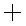
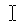
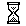
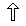
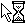
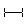
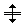

13.3. Personalizar el cursor
CSS no permite modificar los elementos propios del navegador o de la interfaz de usuario del sistema operativo. Sin embargo, el puntero del ratón es una excepción muy importante, ya que se puede modificar mediante la propiedad cursor.
| Propiedad | cursor |
|---|---|
| Valores | ( (url ,)* ( auto | crosshair | default | pointer | move | e-resize | ne-resize | nw-resize | n-resize | se-resize | sw-resize | s-resize | w-resize | text | wait | help | progress ) ) | inherit |
| Se aplica a | Todos los elementos |
| Valor inicial | auto |
| Descripción | Permite personalizar el puntero del ratón |
La propiedad cursor no sólo permite seleccionar un puntero entre los disponibles en el sistema operativo (flecha, mano, reloj de arena, redimensionar, etc.) sino que incluso permite indicar la URL de una imagen que se quiere mostrar como puntero personalizado.
Se pueden indicar varias URL para que CSS intente cargar varias imágenes: si la primera imagen del puntero no se carga o no la soporta el navegador, se pasa a la siguiente imagen y así sucesivamente hasta que se pueda cargar alguna imagen.
El siguiente ejemplo muestra el caso de un puntero definido con varias URL y un valor estándar:
:link, :visited { cursor: url(puntero.svg), url(puntero.cur), pointer }
Si el navegador soporta las imágenes en formato SVG, el puntero del ratón cambia su aspecto por la imagen puntero.svg. Si el navegador no soporta el formato SVG, intenta cargar la siguiente URL que define un puntero en formato .cur. Si no se puede cargar correctamente, se mostraría el valor preestablecido pointer.
Los valores preestablecidos para el puntero se muestran a continuación:
| Puntero | Navegadores que lo soportan |
|---|---|
cursor: default |
Todos |

cursor: crosshair |
Todos |

cursor: hand |
Solo Internet Explorer |

cursor: pointer |
Todos salvo Internet Explorer |
cursor:pointer; cursor: hand |
Todos |
cursor: move |
Todos |

cursor: text |
Todos |

cursor: wait |
Todos |
cursor: help |
Todos |

cursor: n-resize |
Todos |
cursor: ne-resize |
Todos |
cursor: e-resize |
Todos |
cursor: se-resize |
Todos |
cursor: s-resize |
Todos |
cursor: sw-resize |
Todos |
cursor: w-resize |
Todos |

cursor: nw-resize |
Todos |

cursor: progress |
Solo Internet Explorer |
cursor: not-allowed |
Solo Internet Explorer |
cursor: no-drop |
Solo Internet Explorer |

cursor: vertical-text |
Solo Internet Explorer |
cursor: all-scroll |
Solo Internet Explorer |
cursor: col-resize |
Solo Internet Explorer |

cursor: row-resize |
Solo Internet Explorer |
cursor: url(...) |
Solo Internet Explorer |
El puntero personalizado más utilizado es la opción cursor: pointer y cursor: hand que muestra en el puntero una mano que puede pinchar sobre el elemento. Otro puntero muy utilizado es cursor: move que permite indicar en las aplicaciones web dinámicas los elementos de la página que se pueden mover.
Se puede ver un ejemplo de cada uno de los punteros y la compatibilidad con los diferentes navegadores en la siguiente página: http://www.echoecho.com/csscursors.htm
Compartir
Indice de contenidos
- 1 Introducción
- 2 Selectores
- 3 Unidades de medida y colores
- 4 Modelo de cajas
- 5 Posicionamiento y visualización
- 6 Texto
- 7 Enlaces
- 8 Imágenes
- 9 Listas
- 10 Tablas
- 11 Formularios
- 12 Layout
- Capítulo 13. Otros
- 13.2. Versión para imprimir
- 13.3. Personalizar el cursor
- 13.4. Hacks y filtros
- 13.5. Prioridad de las declaraciones CSS
- 13.6. Validador
- 13.7. Recomendaciones generales sobre CSS
- 14 Recursos útiles
- 15 Ejercicios
- 16 Ejercicios resueltos